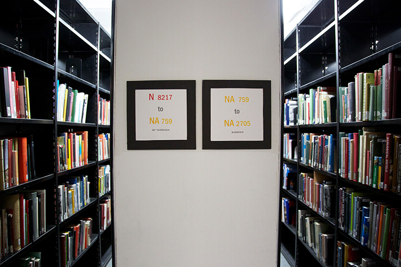
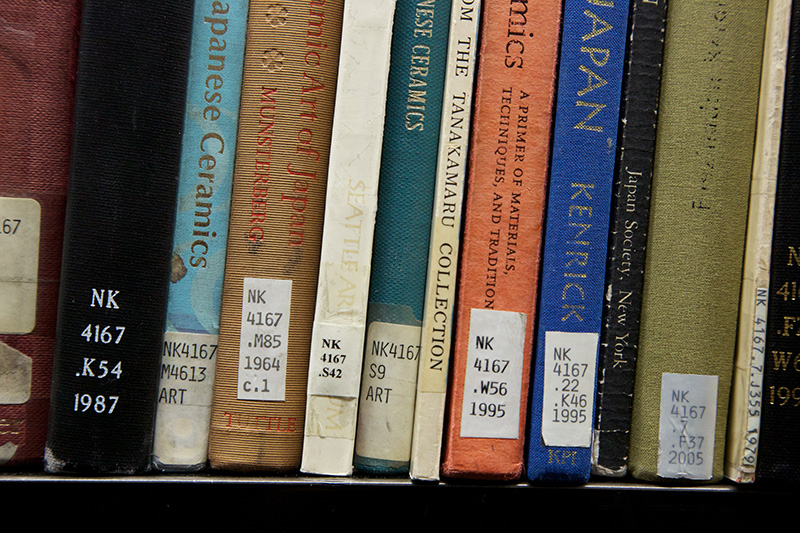
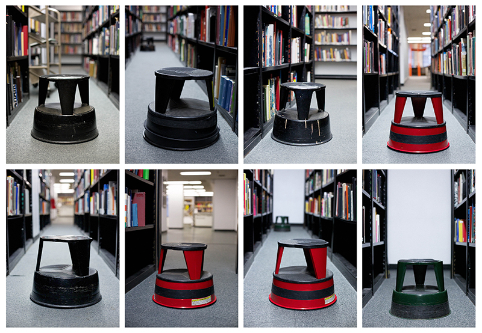

The stacks
contain 50,000 circulating and non-circulating materials and are organized according to the
Library of Congress Classification system.1
Each book has its own
call number.2
Stools3
help people access hard to reach materials. Books can be reviewed at the
quiet study area
or checked out at the
circulation desk.
Additional books can be found using the
research stations.
1
Books are organized by subject. Printed signs help users navigate through the stacks.
2
Users are asked not to re-shelve books. Instead, they are instructed to place loose materials on metal carts distributed throughout the library.
3
There are 14 stools in the stacks.